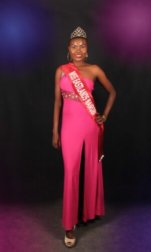

Each contestant will receive his/her own constituency title and
individual custom sash. There will be Eastlands Queen and King and
12 constituency Queens and Kings, each with a constituency-specific
title and a trust for a special charity cause.
REGISTER NOW
2021 WINNERS PRIZE PACKAGE
There will be a total of 24 pageant contestants, 12 male and 12
female competing for a King and Queen title. Additionally, there are
Special Award Winners—which means more prizes for everyone! Each
contestant will receive his/her own constituency title and
individual custom sash. There will be Eastlands Queen and King and
12 constituency Queens and Kings, each with a constituency-specific
title and a trust for a special charity cause. Special award winners
will receive commemorative medals and opportunities for advancement
within the MISS EASTLANDS® Pageant and beyond.
$2,000 CASH PRIZE
$2,200 towards Leadership Development Program to the Eastlands Queen
$5,000 towards Front Cover of EASTLANDS MODELS & TALENT Fashion
Magazine and a published story & photos on 3 dedicated pages $1,000
From our Title Sponsor towards pageant fees $500 A custom-made
top-quality satin sash with 4 rows of rhinestones $300 Prestigious
beautiful crown that you get to keep for life Our pageant provides you
with a Powerful platform that will advance your career to a higher
level, Official MISS EASTLANDS® photo-shoot, Invitations to appear on
Media, Film Festivals, Red Carpet VIP events, Galas & Receptions.
Queens will be the official ambassador and spokesperson for MISS
EASTLANDS®
$2,000 CASH PRIZE
$2,200 towards Leadership Development Program to the Eastlands Queen
$5,000 towards Front Cover of EASTLANDS MODELS & TALENT Fashion
Magazine and a published story & photos on 3 dedicated pages $1,000
From our Title Sponsor towards pageant fees $500 A custom-made
top-quality satin sash with 4 rows of rhinestones $300 Prestigious
beautiful crown that you get to keep for life Our pageant provides you
with a Powerful platform that will advance your career to a higher
level, Official MISS EASTLANDS® photo-shoot, Invitations to appear on
Media, Film Festivals, Red Carpet VIP events, Galas & Receptions.
Queens will be the official ambassador and spokesperson for MISS
EASTLANDS®
QUEENS & KINGS
CONSTITUENCY QUEENS & KINGS $4,800 EACH (TOTAL OF $48,000)
$2,200 towards Leadership Development Program to the Eastlands
Queen $1,000 towards a full dedicated page with a published story
& photos on EASTLANDS MODELS & TALENT Fashion Magazine $1,000 From
our Title Sponsor towards pageant fees $300 A custom-made
top-quality satin sash with 2 rows of rhinestones $300 Prestigious
beautiful crown that you get to keep for life Our pageant provides
you with a Powerful platform that will advance your career to a
higher level, Official MISS EASTLANDS® photo-shoot, Invitations to
appear on Media, Film Festivals, Red Carpet VIP events, Galas &
Receptions.
Constituency Queens and Kings will be the official ambassadors and
spokespeople for MISS EASTLANDS®
ENTOURAGE FOR QUEEN & KING
(MR & MISS EASTLANDS PRELIMINARIES)
__________
From now on as the finalists to after the finals once you are elected
Queens and Kings to be, you can appoint an entourage of volunteers that
could assist you in your journey. People you appoint can be chosen
amongst your friends, family or fans that are passionate about the
success in your journey and mission. The entourage consists of a
Director of Styling, a Director oImage Consulting, a Director of
Sponsorships, a Fitness Coach, a Director of Public Relations, a
Director of Social Media Marketing, and a Director of Special Events
Booking, as well as a photographer, a videographer and other people to
help you to complete your preparations. Please give them recognition in
your social media and your events.
MISS EASTLANDS® HAS 10 AWARDS DIVIDED INTO THREE GROUPS:
4 Special Awards |5 Fast Track Awards |1 Award To Previous Years’
Delegates
__________

MISS PHOTOGENIC AWARD
This is a mandatory competition. Contestants must submit six
high-resolution photos on DVD on the first day of Pageant Week. We
remind all contestants not to submit photos on USB flash drives, as
they will remain the property of the Pageant. Photos will be judged
on the clarity of the photo as well as its quality (in the DVD
format in which it was submitted—not the quality in which it could
be printed). Judges also consider personality, grooming, fashion
sense, and the contestant’s photogenic potential and ability.
Contestants must wear the MISS EASTLANDS® sash in all photos under
consideration for the Miss Photogenic Award. Photos in which the
contestant is not wearing the sash will be disqualified. MISS
EASTLANDS® judges advise that contenders for the award be creative;
express personal style in attire, makeup and hair; and adhere to
professional standards with proper lighting and aesthetically
pleasing backgrounds. MISS EASTLANDS®’S sponsorship system
encourages contestants to seek sponsors for their photo shoot. In
past years, most contestants have had their photos taken at no
charge because many photographers are eager to offer their services
in exchange for the exposure the Pageant provides. MISS EASTLANDS®
allows photographer credits to appear at the right bottom corner of
each picture. Pictures submitted to MISS EASTLANDS® may be used in
publications, press releases, marketing campaigns and on contestant
pages on the MISS EASTLANDS ORGANIZATION’S website.
SOCIAL MEDIA GENIUS AWARD
This is a mandatory competition. As contestants are confirmed, our
social media team creates Facebook fan pages for each. These pages
are handed over to the contestants’ care a few months before the
Gala. Prior to crowning night, MISS EASTLANDS® will select social
media geniuses based on its assessment of the quality,
professionalism and engagement displayed in the fan page posts and
the pages’ overall management. Please note that this contest is not
based on the number of likes the pages receive and is separate from
the People’s Choice Award.
MISS CONGENIALITY AWARD
The Miss Congeniality Award is bestowed upon delegates who are
judged to have displayed the most positivity and genuine enthusiasm
of spirit during Pageant Week. Miss Congeniality is an inspiring
role model for young women who has positive interactions with all
contestants, special guests, the MISS EASTLANDS® team and other
persons she encounters.
GOODWILL AMBASSADOR AWARD
The Goodwill Ambassador Award honors the contestants who are deemed
to have contributed the most to helping MISS EASTLANDS® build
bridges with global, national and local development agencies. She is
also recognized for connecting with sponsors, potential sponsors and
interested parties, and for creating awareness of the Pageant and
its themes in the outside world. Recipients of the Goodwill
Ambassador Award will be crown holders.
FAST-TRACK AWARDS __________
Fast-Track Competitions Give Contestants A Great Opportunity To Shine
Because The Recipients Of Fast-Track Awards Automatically Become Top Six
Contestants. All Fast-Track Award Winners Also Receive 1st, 2nd And 3rd
Place Medals, Except For The Recipient Of The People’s Choice Award, Who
Will Be Adorned With A Crown And Sash.
BEST TALENT AWARD
This is an optional preliminary competition. Any contestant who
wishes to compete for the Best Talent Award should prepare a
two-minute presentation showcasing her strongest performance talent.
In an effort to give maximum exposure, the top five performers will
be asked to entertain on gala night! Common talent category choices
include singing, dancing and playing an instrument. Contestants who
are unsure whether their talent is appropriate can seek guidance
from the MISS EASTLANDS® team. Remember, no presentation shall
exceed two minutes. Talents are scored based on demonstrated skills,
costume and appearance, performance/entertainment value and overall
impression. Contestants must make all necessary arrangements for any
special equipment required. Please note that due to logistical
limitations, pianos are not permitted, but performers may use
keyboards. While the talent competition is a solo exercise,
delegates with similar equipment needs are welcome to share, and
those who need on-stage assistance are invited to nominate one
partner or helper.
PEOPLE’S CHOICE AWARD
This is a mandatory competition. The winner of the People’s Choice Award
is the contestant with the highest number of votes on the MISS
EASTLANDS® website and Facebook page combined. The winner and her tally
will be announced at the Crowning Gala. Because of the nature of this
competition, the People’s Choice Award is an elevated opportunity for
public recognition and self-marketing. The winner will receive a crown
and sash. In order to enter, contestants must provide a high resolution
head shot, a biography not exceeding 200 words, and an introductory
video of up to two minutes, giving your name, your home city, pertinent
biographical details, your reason for entering the pageant and your
plans for the future. The video must be in HD quality (that is, 720×1080
resolution) with professional standard lighting and no background
noises. Videos should be uploaded to the MISS EASTLANDS® YouTube
Channel. Details about how to access the channel will be provided. When
preparation is complete, all requested components—headshot, biography
and YouTube link—should be sent to pageant@misseastlandsnairobi.org.
Contestant biographies will appear on the MISS EASTLANDS® roster, in
publications and press releases, and elsewhere; so ensure that they are
well written. After submissions are made, no changes will be permitted.
Although the People’s Choice Award is both a mandatory and fast-track
competition that earns the winner a place in the top six, it is
independent from the competition for the MISS EASTLANDS® titles that is,
the winner of the award will not have a corresponding score counted
toward her overall pageant tally.
POSITIVE BODY IMAGE AWARD (Swimsuit)
This is a mandatory preliminary competition, alternately called the
swimsuit competition. Contestants will select a two-piece swimsuit and a
pair of high heels. Swimsuits can be traditional, or they can reflect
the active wear trend as long as they consist of a short top and a short
bottom. Accessories such as glasses, hats, jewelry, etc., are welcome.
Judges will score according to physical appearance including complexion
and skin tone, poise, display of energy and charisma, expression of
confidence and composure, and overall presentation and impression.
MR & MISS SPORTS AWARD
This is a mandatory preliminary competition. The Miss Sports Award winner is chosen for his/her strength, agility, endurance, flexibility and display of sportsmanship and ethical conduct during MISS EASTLANDS®’s line-up of sporting activities, which will be announced at a later date. Contestants are reminded to bring fitness wear for this portion of the competition.
TOP MODEL AWARD
This is a mandatory competition. The Top Model Award is conferred on outstanding contestants for their catwalk confidence and presence during preliminaries and the entirety of Pageant Week
FAST-TRACK AWARDS
The Outstanding Ambassador Award Is Reserved For Past Delegates Who Are Good Role Models For Young Woman And Show A Long-Term Commitment To The MISS EASTLANDS® Legacy Beyond Their Own Pageant Year. Recipients Are Congenial In Their Participation In Pageant-Related Activities And Have Positive Interactions With Contestants, The MISS EASTLANDS® Team, Guests And Others They Encounter. The 1st, 2nd And 3rd Place Medal Winners In This Category Will Be Honored On Stage On Gala Night And Recognized In The Program Book, Both In Print And Virtually.
OTHER COMPETITIONS
On-stage questions will be posed to Top Six and Top Three finalists.
At MISS EASTLANDS® we understand that while pageants are pleasurable experiences, the combination of stiff competition and near-and-dear personal aspirations can lead to fear, stress and anxiety. We try to keep stressors to a minimum during the on-stage interview by eliminating the advent of surprise questions. Top Sixfinalists will be asked questions based on their 200-word bios. Top Three finalists will be provided with representative sample questions prior to entering the interview.
The objective of the interview is to evaluate contestants’ capacity for thinking on their feet and responding ad lib. Crown holders must demonstrate their ability to answer general interest questions that may reference but are not limited to current local, regional and global issues and events.
Scoring is based on overall impressions, whether contestants provide in-context answers, whether contestants show that they can handle the pressure of communicating with a large audience, and whether judges believe young people will find their personas relatable, knowledgable and influential.
The Search Is On For FACE OF EASTLANDS 2022. Just Complete A Short
Form To Get Started.
Our work is about inspiring and engaging others to make a change in
the community at local level. It’s a collaboration between us,
social entrepreneurs-corporates,individuals, and civil society
organisations.